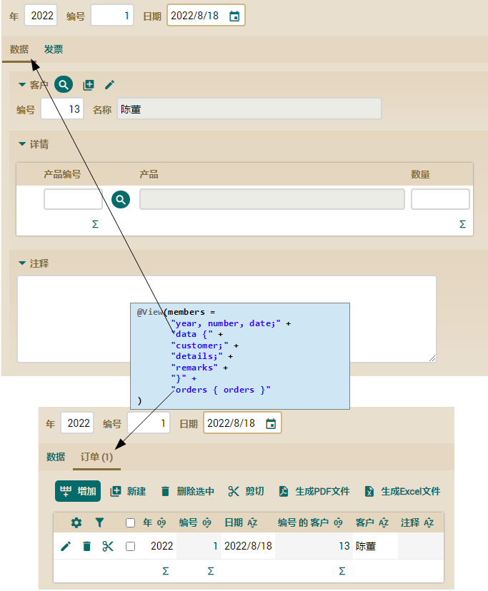
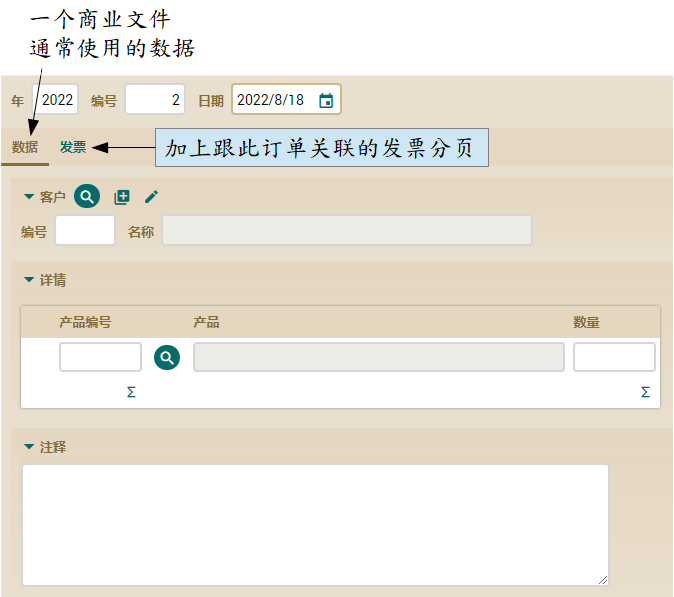
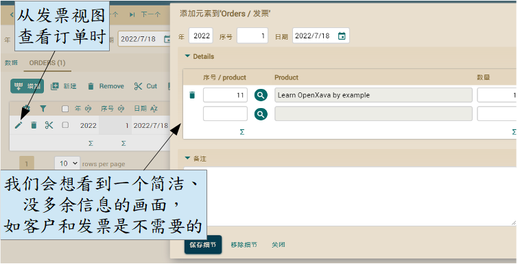
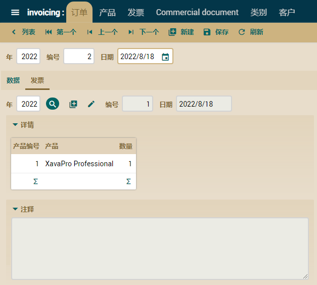

以下代码是在没有继承的情况下定义此视图：请注意！我们将 Invoice 中 CommercialDocument 的所有成员放在开头和第一个分页（DATA），并将订单的集合放在另一个分页。
@View( members=
"year, number, date;" +
"data {" +
"customer;" +
"details;" +
"remarks" +
"}" +
"orders { orders } "
)
public class Invoice extends CommercialDocument {
您应该注意到，除了 Order（订单的集合）之外的所有成员跟 CommercialDocument 都是共通的。因此，我们将把这部分移到 CommercialDocument 中，并使用视图继承重新定义这个视图。
删除 CommercialDocument 中旧的 @View，并编写下这个：
@View(members=
"year, number, date," + // 将开头的成员放在同一行
"data {" + // 将文件主要的信息（DATA）放在一个分页
"customer;" +
"details;" +
"remarks" +
"}"
)
abstract public class CommercialDocument extends Identifiable {
此视图指定如何布局所有 CommercialDocument 的公共数据。现在我们可以从这里重新定义 Invoice 的视图：
@View(extendsView="super.DEFAULT", // 从 CommercialDocument 继承视图
members="orders { orders }" // 将 Orders 放进一个分页
)
public class Invoice extends CommercialDocument {
这样子，声明 Invoice 视图时会比较短。此外，Order、Invoice 和以后其它 CommercialDocument 的通用布局都在同一个地方。因此，如果您在 CommercialDocument 添加新属性，您只需要更改 CommercialDocument 的视图。
使用继承的 Order 视图
既然在 CommercialDocument 中有一个合适的视图，那么声明 Order 视图就很简单了。我们想要的视图如下：

要获得这个，您可以通过 extends CommercialDocument 的默认视图后定义 Order 视图，在新分页中添加 Invoice 引用的：
@View(extendsView="super.DEFAULT", // 从 CommercialDocument 继承视图
members="invoice { invoice } " // 将 Invoice 放进一个分页
)
public class Order extends CommercialDocument {
这样，我们就可以获取 CommercialDocument 中所有数据和发票（Invoice）的分页。
使用 @ReferenceView 和 @CollectionView 来优化视图
当从 Invoice 的界面查看订单时，我们希望该视图应该要很简洁，不需要客户跟发票信息，因为在这种情况下那些数据是多余的：

要获得这效果，请在 Order 中定义一个更简单的视图：
@View( extendsView="super.DEFAULT", // 默认视图
members="invoice { invoice } "
)
@View( name="NoCustomerNoInvoice", // 一个名为 NoCustomerNoInvoice 的视图，里面不包括客户和发票，适合 Invoice 使用
members=
"year, number, date;" +
"details;" +
"remarks"
)
public class Order extends CommercialDocument {
这个在 Order 中定义的新视图名为 NoCustomerNoInvoice，可以从 Invoice 引用，来显示订单集合里各个元素（使用 @CollectionView ）：
public class Invoice extends CommercialDocument {
...
@OneToMany(mappedBy="invoice")
@CollectionView("NoCustomerNoInvoice") // 这视图用来显示订单
private Collection<Order> orders;
使用此代码，订单集合将在 Invoice 使用更合适的视图来显示各个元素。
此外，我们在 Order 用户界面显示发票时，不需要客户和订单信息，因为它们在这里是多余的。为此，我们将在 Invoice 中定义一个更简洁的视图：
@View( extendsView="super.DEFAULT", // 默认视图
members="orders { orders }"
)
@View( name="NoCustomerNoOrders", // 一个名为 NoCustomerNoOrders的视图，里面不包括客户和订单，适合 Order 使用
members=
"year, number, date;" +
"details;" +
"remarks"
)
public class Invoice extends CommercialDocument {
这个在 Invoice 中定义的新视图名为 NoCustomerNoOrders，可以从 Order 引用，来显示对 Invoice 的引用（使用 @ReferenceView）：
public class Order extends CommercialDocument {
@ManyToOne
@ReferenceView("NoCustomerNoOrders") // 这视图用来显示发票
private Invoice invoice;
...
现在 Order 里的 Invoice 引用会 以没有客户和订单信息的方式显示，您将获得更简洁的用户界面：

总结
本章向您展示了如何使用继承将用户界面的定义简化，由使用 @View 的 extendsView 属性。当中，您还看到如何使用 @ReferenceView 和 @CollectionView 来简化引用和集合的显示方式。
下载本课源代码
对这节课有什么问题吗？ 前往轮譠 一切都顺利吗？ 前往第九章